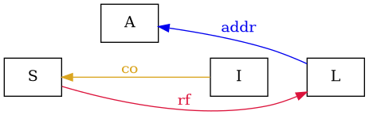
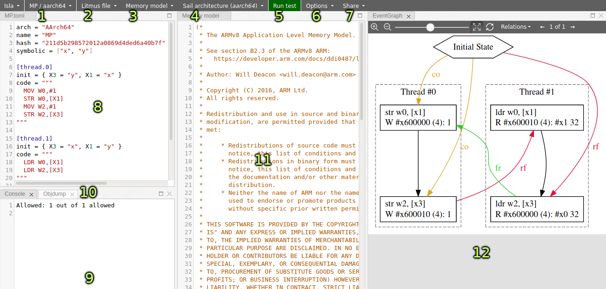

(Open this as a separate page)
Isla is a symbolic execution engine for Sail. It executes instruction set architecture (ISA) specifications written in Sail, such as our ARMv8 model translated from ARM’s machine readable specification, or Sail RISC-V.
Isla-axiomatic then combines these specifications with axiomatic memory models written in a subset of the cat language used by the diy tool suite (and in particular the memory model simulation tool herd7), with an SMT solver like z3 (used by this web interface) or CVC4.

The test/model dropdown provides a list of the currently open tests and their memory models. When a new litmus test or memory model definition is opened it will appear in this dropdown menu.
The litmus file dropdown provides options for opening litmus files and creating new litmus files. It also provides access to a pre-existing library of tests.
The memory model dropdown allows choosing the memory model to be used.
The architecture dropdown allows switching between ARMv8 mode and RISC-V mode.
The run test button runs the current litmus test with the selected model, showing an execution graph in (12) if the test is allowed. If the test is forbidden (or allowed) this will be shown in (9).
Allows setting addition options. Currently instruction fetch reads can be ignored (although they should not be ignored when using the ESOP2020 ifetch model), and it allows filtering out irf edges from the initial state in the ESOP2020 ifetch tests, as they can clutter the graph.
Allows creating a link to a snapshot of the interface state.
The concurrency litmus test, which can be edited.
A log of test results and feedback.
This tab shows the assembled machine code for the litmus test.
The editable memory model specified in the cat language. See below for a description of this language.
A graph of the execution, generated by (5). Relations can be toggled on and off by via the relations dropdown. If there are multiple valid executions, they can be switched between using the arrows in the top right.
cat has some features which are not easy (or even possible at all) to translate into SMT. Roughly-speaking, we support the fragment of cat that defines sets and relations over events. More formally the fragment of cat we support is defined by the grammar:
expr ::= 0
| id
| expr? | expr^-1
| ~expr
| [expr]
| expr | expr
| expr ; expr | expr \ expr | expr & expr | expr * expr
| expr expr
| let id = expr in expr
| ( expr )
binding ::= id = expr
closure_binding ::= id = expr^+
| id = expr^*
id ::= [a-zA-Z_][0-9a-z_.-]*
def ::= let binding { and binding }
| let closure_binding
| let funbinding
| include string
| show expr as id
| show id {, id }
| unshow id {, id }
| [ flag ] check expr [ as id ]
funbinding ::= id ( id ) = expr
check ::= checkname | ~checkname
checkname ::= acyclic | irreflexive | empty